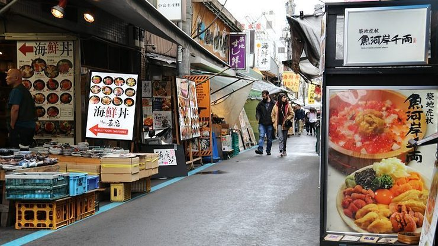

Tsukiji Outer Market
築地場外市場
Tsukiji Outer Market (築地場外市場, Tsukiji Jōgai Shijō) is a district adjacent to the site of the former Tsukiji Wholesale Market. It consists of a few blocks of wholesale and retail shops, as well as restaurants crowded along narrow lanes. Here you can find fresh and processed seafood and produce alongside food-related goods such as knives.
A visit to Tsukiji Outer Market is best combined with a fresh sushi breakfast or lunch at one of the local restaurants. The restaurants are typically open from 5:00 in the morning to around noon or early afternoon. Because most of the fish served and sold at Tsukiji Outer Market is delivered directly from Toyosu Market, this is one of the best places in Tokyo to enjoy fresh seafood.
